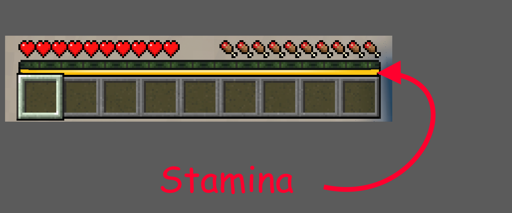

Asesinos
Selecciona un asesino para ver su perfil completo: lore, habilidades y skins.
Habilidades
Cada ronda obtienes dos habilidades aleatorias. Pulsa cada una para ver su funcionamiento.
Golpe
Descripción breve de la habilidad.
Información detallada, cooldown, estrategia, etc.
Mapas
Fragmentos del mundo real que la Falla devoró y copió mal.
Jugabilidad
Conceptos básicos
- Rondas: Cada partida es una ronda donde un jugador es el asesino y el resto supervivientes.
- Objetivo: Los supervivientes deben sobrevivir hasta que el tiempo se agote. No hay objetivos de escape.
- Asesino: Debe eliminar a todos los supervivientes antes de que termine la ronda.
Stamina

- La stamina permite correr y realizar acciones evasivas.
- Se agota al correr y se recupera al caminar o estar quieto.
- Gestionarla es clave para sobrevivir o perseguir.
Habilidades de superviviente
- Cada superviviente recibe dos habilidades aleatorias al inicio de la ronda.
- Son arquetipos mundanos: golpe, malvavisco, revolver, etc.
- No dependen del mapa ni del asesino.
Consejos para supervivientes
- Mantente en movimiento, pero no corras sin control. La stamina es tu recurso más valioso; úsala con cabeza.
- Correr deja huellas visibles. Si usas Cloak, caminar te hará casi invisible; correr delatará tu posición al instante.
- Habilidades como Golpe o Revolver pueden aturdir al asesino y salvar a un compañero en apuros. No las desperdicies.
- Coordínate con otros supervivientes. Un asesino distraído es un asesino que no está cazando a tus aliados.
- Si estás herido, prioriza curarte antes de enfrentarte al asesino. Un corazón de vida puede marcar la diferencia.
Consejos para asesinos
- Tu stamina solo se drena cuando un survivor entra en un radio de 30 bloques. Úsalo a tu favor para patrullar sin desgastarte.
- Aprende las habilidades de tu killer y úsalas en el momento adecuado. Cada habilidad tiene un propósito y un cooldown que gestionar.
- Las armas melee funcionan con hitbox, no como un ataque normal de Minecraft. Aprende el alcance y el ángulo de tu arma para no fallar.
- Presiona a los supervivientes heridos para que cometan errores. Un superviviente con poca vida es un superviviente desesperado.
- Usa el entorno y los errores de los mapas a tu favor. Conoce los callejones sin salida y las zonas donde los survivors no pueden escapar.
- No persigas a un solo superviviente si otros están cerca. Cambiar de objetivo puede desorientar al grupo y generar más oportunidades.